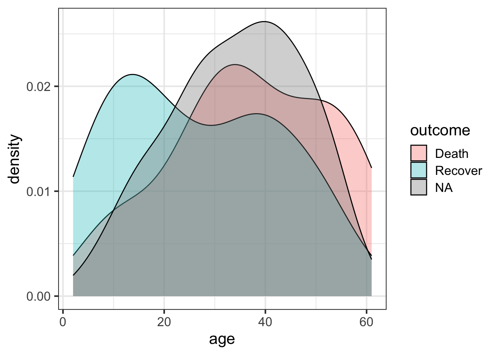
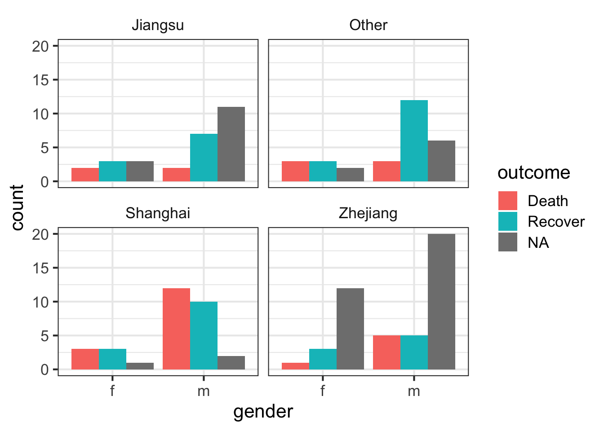
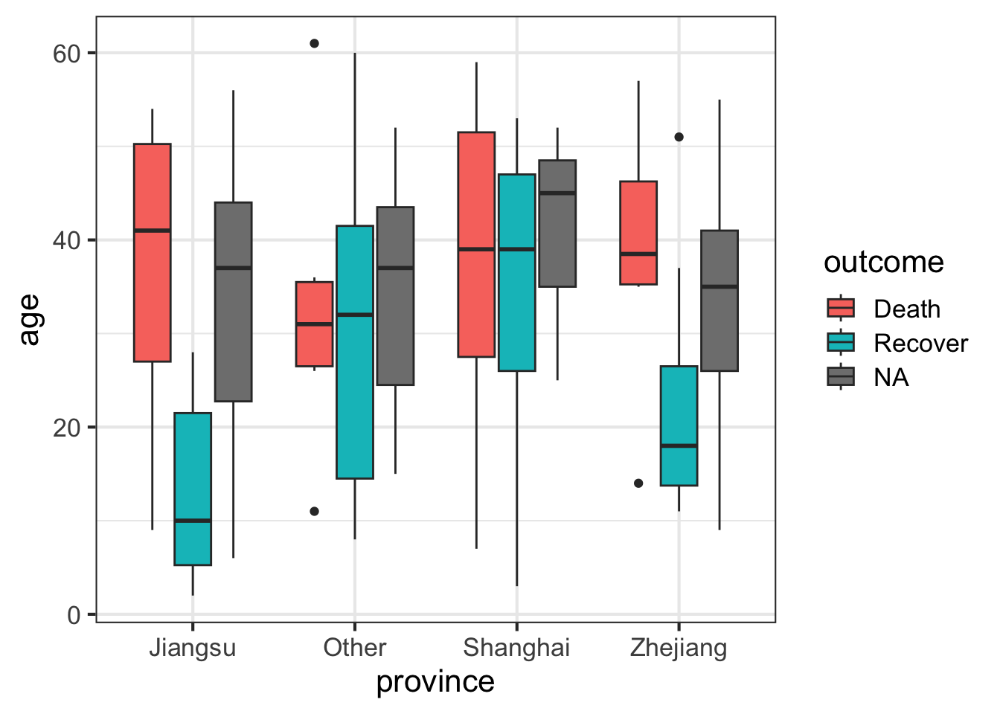
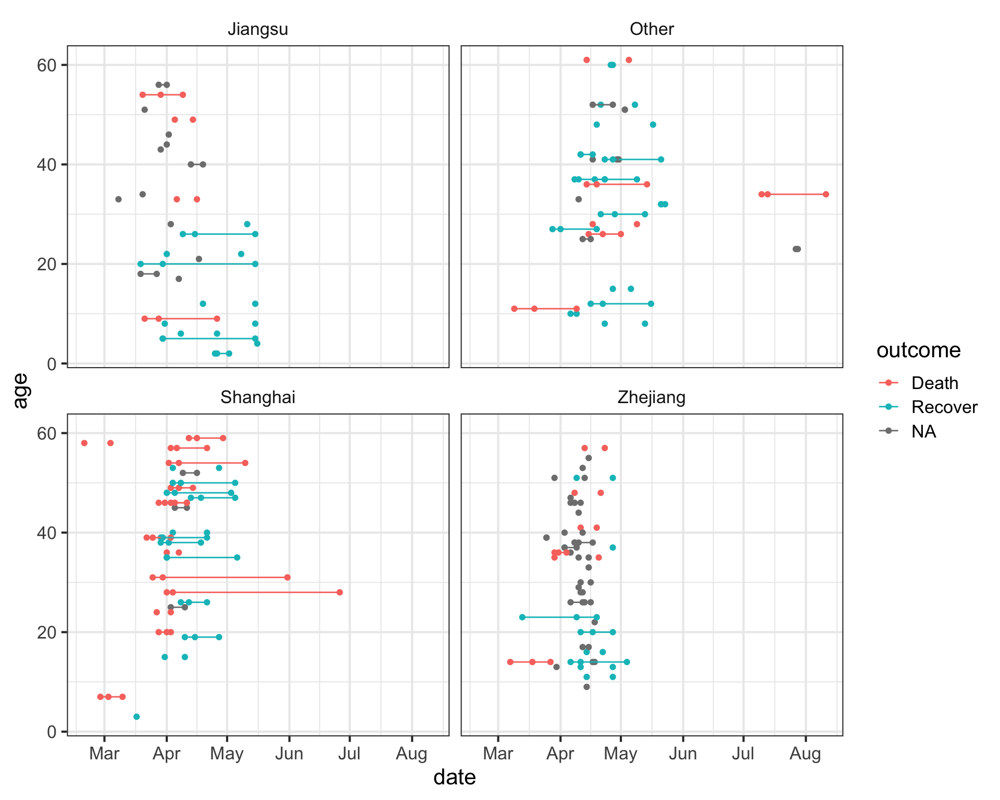
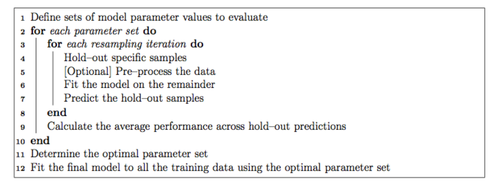
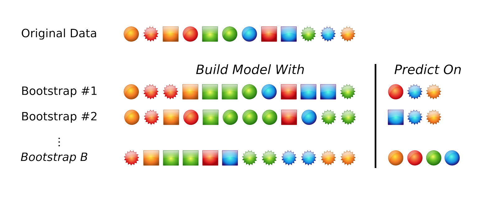
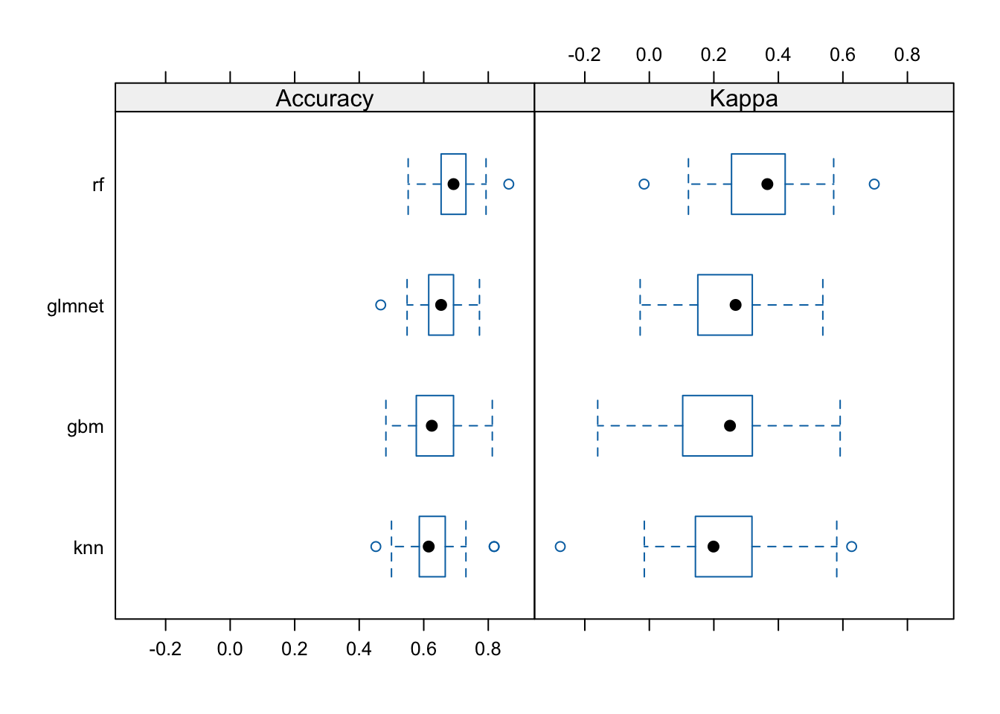
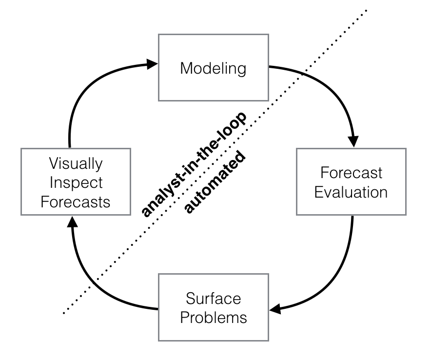
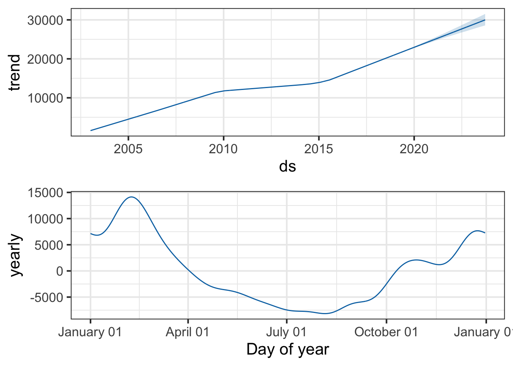
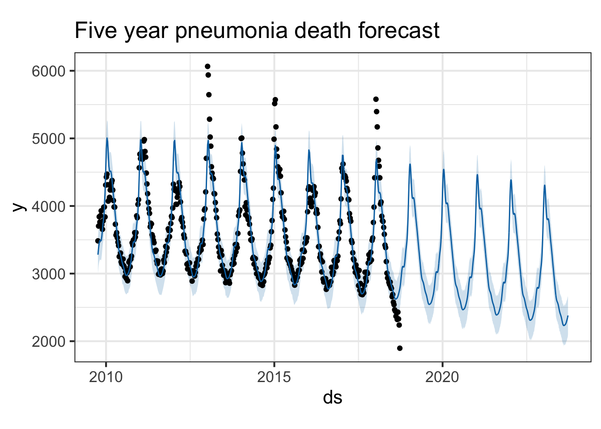

10 Predictive Analytics: Predicting and Forecasting Influenza
This chapter will provide hands-on instruction for using machine learning algorithms to predict a disease outcome. We will cover data cleaning, feature extraction, imputation, and using a variety of models to try to predict disease outcome. We will use resampling strategies to assess the performance of predictive modeling procedures such as Random Forest, stochastic gradient boosting, elastic net regularized regression (LASSO), and k-nearest neighbors. We will also demonstrate demonstrate how to forecast future trends given historical infectious disease surveillance data using methodology that accounts for seasonality and nonlinearity.
Handout: Predictive Modeling Handout.
10.1 Predictive Modeling
Here we’re going to use some epidemiological data collected during an influenza A (H7N9) outbreak in China in 2013. Of 134 cases with data, 31 died, 46 recovered, but 57 cases do not have a recorded outcome. We’ll develop models capable of predicting death or recovery from the unlabeled cases. Along the way, we will:
- Do some exploratory data analysis and data visualization to get an overall sense of the data we have.
- Extract and recode features from the raw data that are more amenable to data mining / machine learning algorithms.
- Impute missing data points from some of the predictor variables.
- Use a framework that enables consistent access to hundreds of classification and regression algorithms, and that facilitates automated parameter tuning using bootstrapping-based resampling for model assessment.
- We will develop models using several different approaches (Random Forest, stochastic gradient boosting, elastic net regularized logistic regression, k-nearest neighbor) by training and testing the models on the data where the outcome is known
- We will compare the performance of each of the models and apply the best to predict the outcome for cases where we didn’t know the outcome.
10.1.1 H7N9 Outbreak Data
The data we’re using here is from the 2013 outbreak of influenza A H7N9 in China, analyzed by Kucharski et al., published in 2014.
Publication: A. Kucharski, H. Mills, A. Pinsent, C. Fraser, M. Van Kerkhove, C. A. Donnelly, and S. Riley. 2014. Distinguishing between reservoir exposure and human-to-human transmission for emerging pathogens using case onset data. PLOS Currents Outbreaks (2014) Mar 7 Edition 1.
Data: Kucharski A, Mills HL, Pinsent A, Fraser C, Van Kerkhove M, Donnelly CA, Riley S (2014) Data from: Distinguishing between reservoir exposure and human-to-human transmission for emerging pathogens using case onset data. Dryad Digital Repository. https://doi.org/10.5061/dryad.2g43n.
The data is made available in the outbreaks package, which is a collection of several simulated and real outbreak datasets, and has been very slightly modified for use here. The analysis we’ll do here is inspired by and modified in part from a similar analysis by Shirin Glander.
There are two datasets available in data.zip:
-
h7n9.csv: The original dataset. Contains the following variables, with lots of missing data throughout.
-
case_id: the sample identifier -
date_onset: date of onset of syptoms -
date_hospitalization: date the patient was hospitalized, if available -
date_outcome: date the outcome (recovery, death) was observed, if available -
outcome: “Death” or “Recover,” if available -
gender: male (m) or female (f) -
age: age of the individual, if known -
province: either Shanghai, Jiangsu, Zhejiang, or Other (lumps together less common provinces)
-
-
h7n9_analysisready.csv: The “analysis-ready” dataset. This data has been cleaned up, with some “feature extraction” / variable recoding done to make the data more suitable to data mining / machine learning methods used here. We still have the outcome variable, either Death, Recover or unknown (NA).
-
case_id: (same as above) -
outcome: (same as above) -
age: (same as above, imputed if unknown) -
male: Instead of sex (m/f), this is a 0/1 indicator, where 1=male, 0=female. -
hospital: Indicator variable whether or not the patient was hospitalized -
days_to_hospital: The number of days between onset and hospitalization -
days_to_outcome: The number of days between onset and outcome (if available) -
early_outcome: Whether or not the outcome was recorded prior to the median date of the outcome in the dataset -
Jiangsu: Indicator variable: 1 = the patient was from the Jiangsu province. -
Shanghai: Indicator variable: 1 = the patient was from the Shanghai province. -
Zhejiang: Indicator variable: 1 = the patient was from the Zhejiang province. -
Other: Indicator variable: 1 = the patient was from some other less common province.
-
10.1.2 Importing H7N9 data
First, let’s load the packages we’ll need initially.
Now let’s read in the data and take a look. Notice that it correctly read in the dates as date-formatted variables. Later on, when we run functions such as median() on a date variable, it knows how to handle that properly. You’ll also notice that there are missing values throughout.
# Read in data
flu <- read_csv("data/h7n9.csv")
# View in RStudio (capital V)
# View(flu)
# Take a look
flu# A tibble: 134 × 8
case_id date_onset date_hospitalization date_outcome outcome gender age
<chr> <date> <date> <date> <chr> <chr> <dbl>
1 case_1 2013-02-19 NA 2013-03-04 Death m 58
2 case_2 2013-02-27 2013-03-03 2013-03-10 Death m 7
3 case_3 2013-03-09 2013-03-19 2013-04-09 Death f 11
4 case_4 2013-03-19 2013-03-27 NA <NA> f 18
5 case_5 2013-03-19 2013-03-30 2013-05-15 Recover f 20
6 case_6 2013-03-21 2013-03-28 2013-04-26 Death f 9
7 case_7 2013-03-20 2013-03-29 2013-04-09 Death m 54
8 case_8 2013-03-07 2013-03-18 2013-03-27 Death m 14
9 case_9 2013-03-25 2013-03-25 NA <NA> m 39
10 case_10 2013-03-28 2013-04-01 2013-04-03 Death m 20
# ℹ 124 more rows
# ℹ 1 more variable: province <chr>10.1.3 Exploratory data analysis
Let’s use ggplot2 to take a look at the data. Refer back to the visualization section (Chapter 5) if you need a refresher.
The outcome variable is the thing we’re most interested in here – it’s the thing we want to eventually predict for the unknown cases. Let’s look at the distribution of that outcome variable (Death, Recover or unknown (NA)), by age. We’ll create a density distribution looking at age, with the fill of the distribution colored by outcome status.
ggplot(flu, aes(age)) + geom_density(aes(fill=outcome), alpha=1/3)
Let’s look at the counts of the number of deaths, recoveries, and unknowns by sex, then separately by province.
We can simply add a facet_wrap to split by province.
ggplot(flu, aes(gender)) +
geom_bar(aes(fill=outcome), position="dodge") +
facet_wrap(~province)
Let’s draw a boxplot showing the age distribution by province, by outcome. This shows that there’s a higher rate of death in older individuals but this is only observed in Jiangsu and Zhejiang provinces.
# First just by age
ggplot(flu, aes(province, age)) + geom_boxplot()
# Then by age and outcome
ggplot(flu, aes(province, age)) + geom_boxplot(aes(fill=outcome))
Let’s try something a little bit more advanced. First, take a look at the data again.
fluNotice how we have three different date variables: date of onset, hospitalization, and outcome. I’d like to draw a plot showing the date on the x-axis with a line connecting the three points from onset, to hospitalization, to outcome (if known) for each patient. I’ll put age on the y-axis so the individuals are separated, and I’ll do this faceted by province.
First we need to use the gather function from the tidyr package to gather up all the date_? variables into a single column we’ll call key, with the actual values being put into a new column called date.
# Gather the date columns
flugather <- flu %>%
gather(key, date, starts_with("date_"))
# Look at the data as is
# flugather
# Better: Show the data arranged by case_id so you see the three entries
flugather %>% arrange(case_id)# A tibble: 402 × 7
case_id outcome gender age province key date
<chr> <chr> <chr> <dbl> <chr> <chr> <date>
1 case_1 Death m 58 Shanghai date_onset 2013-02-19
2 case_1 Death m 58 Shanghai date_hospitalization NA
3 case_1 Death m 58 Shanghai date_outcome 2013-03-04
4 case_10 Death m 20 Shanghai date_onset 2013-03-28
5 case_10 Death m 20 Shanghai date_hospitalization 2013-04-01
6 case_10 Death m 20 Shanghai date_outcome 2013-04-03
7 case_100 <NA> m 30 Zhejiang date_onset 2013-04-16
8 case_100 <NA> m 30 Zhejiang date_hospitalization NA
9 case_100 <NA> m 30 Zhejiang date_outcome NA
10 case_101 <NA> f 51 Zhejiang date_onset 2013-04-13
# ℹ 392 more rowsNow that we have this, let’s visualize the number of days that passed between onset, hospitalization and outcome, for each case. We see that there are lots of unconnected points, especially in Jiangsu and Zhejiang provinces, where one of these dates isn’t known.
ggplot(flugather, aes(date, y=age, color=outcome)) +
geom_point() +
geom_path(aes(group=case_id)) +
facet_wrap(~province)
10.1.4 Feature Extraction
The variables in our data are useful for summary statistics, visualization, EDA, etc. But we need to do some feature extraction or variable recoding to get the most out of machine learning models.
- Age: we’ll keep this one as is.
- Gender: instead of m/f, let’s convert this into a binary indicator variable where 0=female, 1=male.
- Province: along the same lines, let’s create binary classifiers that indicate Shanghai, Zhejiang, Jiangsu, or other provinces.
- Hospitalization: let’s create a binary classifier where 0=not hospitalized, 1=hospitalized.
- Dates: Let’s also take the dates of onset, hospitalization, and outcome, and transform these into days between onset and hospitalization, and days from onset to outcome. The algorithms aren’t going to look at one column then another to do this math – we have to extract this feature ourselves.
- Early outcome: let’s create another binary 0/1 indicating whether someone had an early outcome (earlier than the median outcome date observed).
Let’s build up this pipeline one step at a time. If you want to skip ahead, you can simply read in the already extracted/recoded/imputed dataset at data/h7n9_analysisready.csv.
First, let’s make a backup of the original data in case we mess something up.
flu_orig <- flu10.1.4.1 Create gender / hospitalization indicators
Now let’s start recoding, one step at a time. First of all, when we mutate to add a new variable, we can put in a logical comparison to tell us whether a statement is TRUE or FALSE. For example, let’s look at the gender variable.
flu$genderWe can ask if gender is male (“m”) like this:
flu$gender=="m"So we can do that with a mutate statement on a pipeline. Once we do that, we can remove the old gender variable. E.g.:
Similarly, let’s get an indicator whether someone was hospitalized or not. If hospitalization is missing, this would return TRUE. If you want to ask whether they are not missing, you would use ! to negate the logical question, i.e., !is.na(flu$date_hospitalization).
So now, let’s add that to our pipeline from above.
10.1.4.2 Convert dates to “days to ___”
Let’s continue to add days from onset to hospitalization and days to outcome by subtracting one date from the other, and converting the value to numeric. We’ll also create an early outcome binary variable indicating whether the date of the outcome was less than the median, after removing missing variables. We’ll finally remove all the variables that start with “date.” Finally, we’ll use the mutate_if function, which takes a predicate and an action function. We’ll ask – if the variable is logical (TRUE/FALSE), turn it into an integer (1/0).
# What's the median outcome date?
median(flu$date_outcome, na.rm=TRUE)
# Run the whole pipeline
flu %>%
mutate(male = gender=="m") %>%
select(-gender) %>%
mutate(hospital = !is.na(date_hospitalization)) %>%
mutate(days_to_hospital = as.numeric(date_hospitalization - date_onset)) %>%
mutate(days_to_outcome = as.numeric(date_outcome - date_onset)) %>%
mutate(early_outcome = date_outcome < median(date_outcome, na.rm=TRUE)) %>%
select(-starts_with("date")) %>%
mutate_if(is.logical, as.integer)Once you’re satisfied your pipeline works, reassign the pipeline back to the flu object itself (remember, we created the backup above in case we messed something up here).
# Make the assignment
flu <- flu %>%
mutate(male = gender=="m") %>%
select(-gender) %>%
mutate(hospital = !is.na(date_hospitalization)) %>%
mutate(days_to_hospital = as.numeric(date_hospitalization - date_onset)) %>%
mutate(days_to_outcome = as.numeric(date_outcome - date_onset)) %>%
mutate(early_outcome = date_outcome < median(date_outcome, na.rm=TRUE)) %>%
select(-starts_with("date")) %>%
mutate_if(is.logical, as.integer)
# Take a look
flu# A tibble: 134 × 9
case_id outcome age province male hospital days_to_hospital
<chr> <chr> <dbl> <chr> <int> <int> <dbl>
1 case_1 Death 58 Shanghai 1 0 NA
2 case_2 Death 7 Shanghai 1 1 4
3 case_3 Death 11 Other 0 1 10
4 case_4 <NA> 18 Jiangsu 0 1 8
5 case_5 Recover 20 Jiangsu 0 1 11
6 case_6 Death 9 Jiangsu 0 1 7
7 case_7 Death 54 Jiangsu 1 1 9
8 case_8 Death 14 Zhejiang 1 1 11
9 case_9 <NA> 39 Zhejiang 1 1 0
10 case_10 Death 20 Shanghai 1 1 4
# ℹ 124 more rows
# ℹ 2 more variables: days_to_outcome <dbl>, early_outcome <int>10.1.4.3 Create indicators for province
Now, there’s one more thing we want to do. Instead of a single “province” variable that has multiple levels, we want to do the dummy coding ourselves. When we ran regression models R handled this internally without our intervention. But we need to be explicit here. Here’s one way to do it.
First, there’s a built-in function called model.matrix that creates dummy codes. You have to give it a formula like you do in linear models, but here, I give it a ~0+variable syntax so that it doesn’t try to create an intercept. That is, instead of k-1 dummy variables, it’ll create k. Try it.
model.matrix(~0+province, data=flu)There’s another built-in function called cbind that binds columns together. This can be dangerous to use if you’re not certain that rows are in the same order (there, it’s better to use an inner join). But here, we’re certain they’re in the same order. Try binding the results of that to the original data.
cbind(flu, model.matrix(~0+province, data=flu))Finally, turn it into a tibble and select out the original province variable. Once you’ve run the pipeline, go back and make the assignment back to the flu object itself.
# A tibble: 134 × 12
case_id outcome age male hospital days_to_hospital days_to_outcome
<chr> <chr> <dbl> <int> <int> <dbl> <dbl>
1 case_1 Death 58 1 0 NA 13
2 case_2 Death 7 1 1 4 11
3 case_3 Death 11 0 1 10 31
4 case_4 <NA> 18 0 1 8 NA
5 case_5 Recover 20 0 1 11 57
6 case_6 Death 9 0 1 7 36
7 case_7 Death 54 1 1 9 20
8 case_8 Death 14 1 1 11 20
9 case_9 <NA> 39 1 1 0 NA
10 case_10 Death 20 1 1 4 6
# ℹ 124 more rows
# ℹ 5 more variables: early_outcome <int>, provinceJiangsu <dbl>,
# provinceOther <dbl>, provinceShanghai <dbl>, provinceZhejiang <dbl>Optional: Notice how the new variables are provinceJiangsu, provinceOther, provinceShanghai, provinceZhejiang. If we want to strip off the “province” we can do that. There’s a built-in command called gsub that can help here. Take a look at the help for ?gsub.
10.1.5 Imputation
We have a lot of missing data points throughout. Most of the data mining algorithms we’re going to use later can’t handle missing data, so observations with any missing data are excluded from the model completely. If we have a large dataset and only a few missing values, it’s probably better to exclude them and proceed. But since we’ve already got a pretty low number of observations, we need to try to impute missing values to maximize our use of the data we have.
There are lots of different imputation approaches. An overly simplistic method is simply a mean or median imputation – you simply plug in the mean value for that column for the missing sample’s value. This leaves the mean unchanged (good) but artificially decreases the variance (not good). We’re going to use the mice package for imputation (Multivariate Imputation by Chained Equations). This package gives you functions that can impute continuous, binary, and ordered/unordered categorical data, imputing each incomplete variable with a separate model. It tries to account for relations in the data and uncertainty about those relationships. The methods are described in the paper.
Buuren, S., & Groothuis-Oudshoorn, K. (2011). mice: Multivariate imputation by chained equations in R. Journal of statistical software, 45(3).
Let’s load the mice package, and take a look at our data again.
# A tibble: 134 × 12
case_id outcome age male hospital days_to_hospital days_to_outcome
<chr> <chr> <dbl> <int> <int> <dbl> <dbl>
1 case_1 Death 58 1 0 NA 13
2 case_2 Death 7 1 1 4 11
3 case_3 Death 11 0 1 10 31
4 case_4 <NA> 18 0 1 8 NA
5 case_5 Recover 20 0 1 11 57
6 case_6 Death 9 0 1 7 36
7 case_7 Death 54 1 1 9 20
8 case_8 Death 14 1 1 11 20
9 case_9 <NA> 39 1 1 0 NA
10 case_10 Death 20 1 1 4 6
# ℹ 124 more rows
# ℹ 5 more variables: early_outcome <int>, Jiangsu <dbl>, Other <dbl>,
# Shanghai <dbl>, Zhejiang <dbl>Eventually we want to predict the outcome, so we don’t want to factor that into the imputation. We also don’t want to factor in the case ID, because that’s just an individual’s identifier. So let’s create a new dataset selecting out those two variables so we can try to impute everything else.
The mice() function itself returns a special kind of object called a multiply imputed data set, and from this we can run mice’s complete() on the thing returned by mice() to complete the dataset that was passed to it. Here’s what we’ll do. We’ll take the flu data, select out the first two columns, create the imputation, then complete the original data, assigning that to a new dataset called fluimp. First let’s set the random number seed generator to some number (use the same as I do if you want identical results).
Now, we need to put the data back together again. We do this by selecting the original two columns from the original flu data, and then using cbind() like above to mash the two datasets together side by side. Finally, we’ll turn it back into a tibble. Once you’ve run the pipeline and you like the result, assign it back to fluimp.
# Run the pipeline successfully first before you reassign!
fluimp <- flu %>%
select(1,2) %>%
cbind(fluimp) %>%
as_tibble()
fluimp# A tibble: 134 × 12
case_id outcome age male hospital days_to_hospital days_to_outcome
<chr> <chr> <dbl> <int> <int> <dbl> <dbl>
1 case_1 Death 58 1 0 7 13
2 case_2 Death 7 1 1 4 11
3 case_3 Death 11 0 1 10 31
4 case_4 <NA> 18 0 1 8 38
5 case_5 Recover 20 0 1 11 57
6 case_6 Death 9 0 1 7 36
7 case_7 Death 54 1 1 9 20
8 case_8 Death 14 1 1 11 20
9 case_9 <NA> 39 1 1 0 18
10 case_10 Death 20 1 1 4 6
# ℹ 124 more rows
# ℹ 5 more variables: early_outcome <int>, Jiangsu <dbl>, Other <dbl>,
# Shanghai <dbl>, Zhejiang <dbl>At this point we’re almost ready to do some predictive modeling! If you didn’t make it this far and you just want to read in the analysis ready dataset, you can do that too.
fluimp <- read_csv("data/h7n9_analysisready.csv")10.1.6 The caret package
We’re going to use the caret package for building and testing predictive models using a variety of different data mining / ML algorithms. The package was published in JSS in 2008. Max Kuhn’s slides from the 2013 useR! conference are also a great resource, as is the caret package vignette, and the detailed e-book documentation.
Kuhn, M. (2008). Building Predictive Models in R Using the caret Package. Journal of Statistical Software, 28(5), 1 - 26. doi: http://dx.doi.org/10.18637/jss.v028.i05
The caret package (short for Classification And REgression Training) is a set of functions that streamline the process for creating and testing a wide variety of predictive models with different resampling approaches, as well as estimating variable importance from developed models. There are many different modeling functions in R spread across many different packages, and they all have different syntax for model training and/or prediction. The caret package provides a uniform interface the functions themselves, as well as a way to standardize common tasks (such parameter tuning and variable importance).
The train function from caret is used to:
- evaluate, using resampling, the effect of model tuning parameters on performance
- choose the “optimal” model across these parameters
- estimate model performance from a training set
10.1.6.1 Models available in caret
First you have to choose a specific type of model or algorithm. Currently there are 239 different algorithms implemented in caret. Caret provides the interface to the method, but you still need the external package installed. For example, we’ll be fitting a Random Forest model, and for that we’ll need the randomForest package installed. You can see all the methods that you can deploy by looking at the help for train.
From here, click on the link to see the available models or models by tag. From here you can search for particular models by name. We’re going to fit models using Random Forest, stochastic gradient boosting, k-Nearest Neighbors, Lasso and Elastic-Net Regularized Generalized Linear Models. These require the packages randomForest, gbm, kknn, and glmnet, respectively.
Each of the models may have one or more tuning parameters – some value or option you can set to tweak how the algorithm develops. In k-nearest neighbors, we can try different values of k. With random forest, we can set the \(m_{\text{try}}\) option – the algorithm will select \(m_{\text{try}}\) number of predictors to attempt a split for classification. Caret attempts to do this using a procedure like this:

That is, it sweeps through each possible parameter you can set for the particular type of model you choose, and uses some kind of resampling scheme with your training data, fitting the model on a subset and testing on the held-out samples.
10.1.6.2 Resampling
The default resampling scheme caret uses is the bootstrap. Bootstrapping takes a random sample with replacement from your data that’s the same size of the original data. Samples might be selected more than once, and some aren’t selected at all. On average, each sample has a ~63.2% chance of showing up at least once in a bootstrap sample. Some samples won’t show up at all, and these held out samples are the ones that are used for testing the performance of the trained model. You repeat this process many times (e.g., 25, 100, etc) to get an average performance estimate on unseen data. Here’s what it looks like in practice.

Many alternatives exist. Another popular approach is cross-validation. Here, a subset of your data (e.g., 4/5ths, or 80%) is used for training, and the remaining 1/5th or 20% is used for performance assessment. You slide the cross-validation interval over and use the next 4/5ths for training and 1/5th for testing. You do this again for all 5ths of the data. You can optionally repeat this process many times (repeated cross-validation) to get an average cross validation prediction accuracy for a given model and set of tuning parameters.
The trainControl option in the train function controls this, and you can learn more about this under the Basic Parameter Tuning section of the caret documentation.
10.1.7 Model training
Let’s try it out! If you didn’t make it through the data preprocessing steps and you just want to read in the analysis ready dataset, you can do this:
fluimp <- read_csv("data/h7n9_analysisready.csv")10.1.7.1 Splitting data into known and unknown outcomes
Before we continue, let’s split the dataset into samples where we know the outcome, and those where we don’t. The unknown samples will be the ones where is.na(outcome) is TRUE. So you can use a filter statement.
The known samples are the cases where !is.na(outcome) is TRUE, that is, cases where the outcome is not (!) missing. One thing we want to do here while we’re at it is remove the case ID. This is just an arbitrary numerically incrementing counter and we don’t want to use this in building a model!
10.1.7.2 A note on reproducibility and set.seed()
When we train a model using resampling, that sampling is going to happen pseudo-randomly. Try running this function which generates five numbers from a random uniform distribution between 0 and 1.
runif(5)If you run that function over and over again, you’ll get different results. But, we can set the random number seed generator with any value we choose, and we’ll get the same result. Try setting the seed, drawing the random numbers, then re-setting the same seed, and re-running the runif function again. You should get identical results.
Eventually I’m going to compare different models to each other, so I want to set the random number seed generator to the same value for each model so the same random bootstrap samples are identical across models.
10.1.7.3 Random Forest
Let’s fit a random forest model. See the help for ?train and click on the link therein to see what abbreviations correspond to which model. First set the random number seed generator to some number, e.g., 8382, that we’ll use for all other models we make. The model forumula here takes the know data, and the responseVar~. syntax says “predict responseVar using every other variable in the data.” Finally, notice how when we call train() from the caret package using “rf” as the type of model, it automatically loads the randomForest package that you installed. If you didn’t have it installed, it would probably ask you to install it first.
# Set the random number seed generator
set.seed(8382)
# Fit a random forest model for outcome against everything in the model (~.)
modrf <- train(outcome~., data=known, method="rf")
# Take a look at the output
modrfRandom Forest
77 samples
10 predictors
2 classes: 'Death', 'Recover'
No pre-processing
Resampling: Bootstrapped (25 reps)
Summary of sample sizes: 77, 77, 77, 77, 77, 77, ...
Resampling results across tuning parameters:
mtry Accuracy Kappa
2 0.688 0.328
6 0.684 0.322
10 0.693 0.345
Accuracy was used to select the optimal model using the largest value.
The final value used for the model was mtry = 10.Take a look at what that tells us. It tells us it’s fitting a Random Forest model using 77 samples, predicting a categorical outcome class (Death or Recover) based on 10 predictors. It’s not doing any pre-processing like centering or scaling, and it’s doing bootstrap resampling of 77 samples with replacement, repeated 25 times each. Random Forest has a single tuning parameter, \(m_{\text{try}}\) – the algorithm will select \(m_{\text{try}}\) number of predictors to attempt a split for classification when building a classification tree. The caret package does 25 bootstrap resamples for different values of \(m_{\text{try}}\) (you can also control this too if you want), and computes accuracy and kappa measures of performance on the held-out samples.
Accuracy is the number of true assignments to the correct class divided by the total number of samples. Kappa takes into account the expected accuracy while considering chance agreement, and is useful for extremely imbalanced class distributions. For continuous outcomes, you can measure things like RMSE or correlation coefficients.
A bit about random forests. Random forests are an ensemble learning approach based on classification trees. The CART (classification and regression tree) method searches through all available predictors to try to find a value of a single variable that splits the data into two groups by minimizing the impurity of the outcome between the two groups. The process is repeated over and over again until a hierarchical (tree) structure is created. But trees don’t have great performance (prediction accuracy) compared to other models. Small changes in the data can drastically affect the structure of the tree.
Tree algorithms are improved by ensemble approaches - instead of growing a single tree, grow many trees and aggregate (majority vote or averaging) the predictions made by the ensemble. The random forest algorithm is essentially:
- From the training data of n samples, draw a bootstrap sample of size n.
- For each bootstrap sample, grow a classification tree, but with a small modification compared to the traditional algorithm: instead of selecting from all possible predictor variables to form a split, choose the best split among a randomly selected subset of \(m_{\text{try}}\) predictors. Here, \(m_{\text{try}}\) is the only tuning parameter. The trees are grown to their maximum size and not “pruned” back.
- Repeat the steps agove until a large number of trees is grown.
- Estimate the performance of the ensemble of trees using the “out-of-bag” samples - i.e., those that were never selected during the bootstrap procedure in step #1.
- Estimate the importance of each variable in the model by randomly permuting each predictor variable in testing on the out-of-bag samples. If a predictor is important, prediction accuracy will degrade. If the predictor isn’t that helpful, performance doesn’t deteriorate as much.
Random forests are efficient compared to growing a single tree. For one, the RF algorithm only selects from \(m_{\text{try}}\) predictors at each step, rather than all available predictors. Usually \(m_{\text{try}}\) is by default somewhere close to the square root of the total number of available predictors, so the search is very fast. Second, while the traditional CART tree algorithm has to go through extensive cross-validation based pruning to avoid overfitting, the RF algorithm doesn’t do any pruning at all. In fact, building an RF model can be faster than building a single tree!
Caret also provides a function for assessing the importance of each variable. The varImp function knows what kind of model was fitted and knows how to estimate variable importance. For Random Forest, it’s an estimate of how much worse the prediction gets after randomly shuffling the values of each predictor variable in turn. A variable that’s important will result in a much worse prediction than a variable that’s not as meaningful.
varImp(modrf, scale=TRUE)rf variable importance
Overall
age 100.000
days_to_outcome 60.642
days_to_hospital 38.333
early_outcome 36.591
Other 15.772
hospital 8.410
male 3.758
Shanghai 1.687
Jiangsu 0.133
Zhejiang 0.000You can also pass that whole thing to plot(), or wrap the statement in plot(), to see a graphical representation.
10.1.7.4 Stochastic Gradient Boosting
Let’s try a different method, stochastic gradient boosting, which uses a different method for building an ensemble of classification trees (see this post for a discussion of bagging vs boosting). This requires the gbm package. Again, set the random seed generator.
Stochastic Gradient Boosting
77 samples
10 predictors
2 classes: 'Death', 'Recover'
No pre-processing
Resampling: Bootstrapped (25 reps)
Summary of sample sizes: 77, 77, 77, 77, 77, 77, ...
Resampling results across tuning parameters:
interaction.depth n.trees Accuracy Kappa
1 50 0.630 0.210
1 100 0.627 0.210
1 150 0.630 0.213
2 50 0.633 0.222
2 100 0.636 0.218
2 150 0.632 0.208
3 50 0.616 0.188
3 100 0.639 0.227
3 150 0.636 0.218
Tuning parameter 'shrinkage' was held constant at a value of 0.1
Tuning parameter 'n.minobsinnode' was held constant at a value of 10
Accuracy was used to select the optimal model using the largest value.
The final values used for the model were n.trees = 100, interaction.depth =
3, shrinkage = 0.1 and n.minobsinnode = 10.Notice how stochastic gradient boosting has two different tuning parameters - interaction depth and n trees. There were others (shrinkage, and n.minobsinnode) that were held constant. The caret package automates the bootstrap resampling based performance assessment across all combinations of depth and ntrees, and it tells you where you got the best performance. Notice that the performance here doesn’t seem to be as good as random forest. We can also look at variable importance here too, and see similar rankings.
10.1.7.5 Model comparison: Random Forest vs Gradient Boosting
Let’s compare those two models. Because the random seed was set to the same number (8382), the bootstrap resamples were identical across each model. Let’s directly compare the results for the best models from each method.
Call:
summary.resamples(object = modsum)
Models: gbm, rf
Number of resamples: 25
Accuracy
Min. 1st Qu. Median Mean 3rd Qu. Max. NA's
gbm 0.483 0.577 0.625 0.639 0.692 0.812 0
rf 0.552 0.654 0.692 0.693 0.731 0.864 0
Kappa
Min. 1st Qu. Median Mean 3rd Qu. Max. NA's
gbm -0.1600 0.103 0.250 0.227 0.319 0.591 0
rf -0.0162 0.255 0.366 0.345 0.421 0.697 0It appears that random forest is doing much better in terms of both accuracy and kappa. Let’s train a few other types of models.
10.1.7.6 Elastic net regularized logistic regression
Elastic net regularization is a method that combines both the lasso and ridge methods of reguarizing a model. Regularization is a method for penalizing a model as it gains complexity with more predictors in an attempt to avoid overfitting. You’ll need the glmnet package for this.
glmnet
77 samples
10 predictors
2 classes: 'Death', 'Recover'
No pre-processing
Resampling: Bootstrapped (25 reps)
Summary of sample sizes: 77, 77, 77, 77, 77, 77, ...
Resampling results across tuning parameters:
alpha lambda Accuracy Kappa
0.10 0.000391 0.635 0.226
0.10 0.003908 0.634 0.226
0.10 0.039077 0.630 0.217
0.55 0.000391 0.635 0.226
0.55 0.003908 0.633 0.223
0.55 0.039077 0.633 0.226
1.00 0.000391 0.635 0.226
1.00 0.003908 0.630 0.215
1.00 0.039077 0.643 0.243
Accuracy was used to select the optimal model using the largest value.
The final values used for the model were alpha = 1 and lambda = 0.0391.10.1.7.7 k-nearest neighbor
k-nearest neighbor attempts to assign samples to their closest labeled neighbors in high-dimensional space. You’ll need the kknn package for this.
k-Nearest Neighbors
77 samples
10 predictors
2 classes: 'Death', 'Recover'
No pre-processing
Resampling: Bootstrapped (25 reps)
Summary of sample sizes: 77, 77, 77, 77, 77, 77, ...
Resampling results across tuning parameters:
kmax Accuracy Kappa
5 0.635 0.218
7 0.635 0.218
9 0.633 0.214
Tuning parameter 'distance' was held constant at a value of 2
Tuning
parameter 'kernel' was held constant at a value of optimal
Accuracy was used to select the optimal model using the largest value.
The final values used for the model were kmax = 7, distance = 2 and kernel
= optimal.10.1.7.8 Compare all the models
Now let’s look at the performance characteristics for the best performing model across all four types of models we produced. It still looks like random forest is coming through as the winner.
Call:
summary.resamples(object = modsum)
Models: gbm, rf, glmnet, knn
Number of resamples: 25
Accuracy
Min. 1st Qu. Median Mean 3rd Qu. Max. NA's
gbm 0.483 0.577 0.625 0.639 0.692 0.812 0
rf 0.552 0.654 0.692 0.693 0.731 0.864 0
glmnet 0.467 0.615 0.654 0.643 0.692 0.773 0
knn 0.452 0.586 0.615 0.635 0.667 0.818 0
Kappa
Min. 1st Qu. Median Mean 3rd Qu. Max. NA's
gbm -0.1600 0.103 0.250 0.227 0.319 0.591 0
rf -0.0162 0.255 0.366 0.345 0.421 0.697 0
glmnet -0.0284 0.150 0.267 0.243 0.319 0.538 0
knn -0.2760 0.143 0.199 0.218 0.318 0.627 0The bwplot() function can take this model summary object and visualize it.
bwplot(modsum)
10.1.8 Prediction on unknown samples
Once we have a model trained it’s fairly simple to predict the class of the unknown samples. Take a look at the unknown data again:
unknownNow, since Random Forest worked best, let’s use that model to predict the outcome!
predict(modrf, newdata=unknown) [1] Recover Recover Death Recover Death Death Recover Recover Death
[10] Recover Death Recover Recover Recover Recover Death Recover Death
[19] Death Death Recover Recover Recover Recover Recover Recover Recover
[28] Recover Death Death Recover Recover Recover Recover Recover Recover
[37] Recover Recover Recover Recover Recover Recover Recover Death Recover
[46] Death Recover Death Recover Recover Recover Recover Recover Recover
[55] Recover Recover Recover
Levels: Death RecoverThis gives you a vector of values that would be the outcome for the individuals in the unknown dataset. From here it’s pretty simple to put them back in the data with a mutate().
# A tibble: 57 × 12
case_id outcome age male hospital days_to_hospital days_to_outcome
<chr> <fct> <dbl> <dbl> <dbl> <dbl> <dbl>
1 case_4 Recover 18 0 1 8 46
2 case_9 Recover 39 1 1 0 18
3 case_15 Death 34 0 0 11 38
4 case_16 Recover 51 1 0 3 20
5 case_22 Death 56 1 1 4 17
6 case_28 Death 51 1 0 6 6
7 case_31 Recover 43 1 0 4 21
8 case_32 Recover 46 1 0 3 20
9 case_38 Death 28 1 0 2 7
10 case_39 Recover 38 1 1 0 18
# ℹ 47 more rows
# ℹ 5 more variables: early_outcome <dbl>, Jiangsu <dbl>, Other <dbl>,
# Shanghai <dbl>, Zhejiang <dbl>Alternatively, you could pass in type="prob" to get prediction probabilities instead of predicted classes.
Death Recover
1 0.040 0.960
2 0.030 0.970
3 0.564 0.436
4 0.138 0.862
5 0.774 0.226
6 0.972 0.028You could also imagine going further to get the prediction probabilities out of each type of model we made. You could add up the prediction probabilities for Death and Recovery for each individual across model types, and then compute a ratio. If across all the models that ratio is, for example, 2x in favor of death, you could predict death, or if it’s 2x in favor of recovery, you predict recover, and if it’s in between, you might call it “uncertain.” This lets you not only reap the advantages of ensemble learning within a single algorithm, but also lets you use information across a variety of different algorithm types.
10.2 Forecasting
10.2.1 The Prophet Package
Forecasting is a common data science task that helps with things like capacity planning, goal setting, anomaly detection, and resource use projection. Forecasting can involve complex models, where overly simplistic models can be brittle and can be too inflexible to incorporate useful assumptions about the underlying data.
Recently, the data science team at Facebook released as open-source a tool they developed for forecasting, called prophet, as both an R and python package.
- Paper (preprint): https://peerj.com/preprints/3190/
- Project homepage: https://facebook.github.io/prophet/
- Documentation: https://facebook.github.io/prophet/docs/quick_start.html
- R package: https://cran.r-project.org/web/packages/prophet/index.html
- Python package: https://pypi.python.org/pypi/fbprophet/
- Source code: https://github.com/facebook/prophet
Google and Twitter have released as open-source similar packages: Google’s CausalImpact software (https://google.github.io/CausalImpact/) assists with inferring causal effects of a design intervention on a time series, and Twitter’s AnomalyDetection package (https://github.com/twitter/AnomalyDetection) was designed to detect blips and anomalies in time series data given the presence of seasonality and underlying trends. See also Rob Hyndman’s forecast package in R.
Prophet is optimized for forecasting problems that have the following characteristics:
- Hourly, daily, or weekly observations with at least a few months (preferably a year) of history
- Strong multiple “human-scale” seasonalities: day of week and time of year
- Important holidays that occur at irregular intervals that are known in advance (e.g. the Super Bowl)
- A reasonable number of missing observations or large outliers
- Historical trend changes, for instance due to product launches or logging changes
- Trends that are non-linear growth curves, where a trend hits a natural limit or saturates
These use cases are optimized for business forecasting problems encountered at Facebook, but many of the characteristics here apply well to other kinds of forecasting problems. Further, while the default settings can produce fairly high-quality forecasts, if the results aren’t satisfactory, you aren’t stuck with a completely automated model you can’t change. The prophet package allows you to tweak forecasts using different parameters. The process is summarized in the figure below.

Prophet is a good replacement for the forecast package because:
- Prophet makes it easy. The forecast package offers many different techniques, each with their own strengths, weaknesses, and tuning parameters. While the choice of parameter settings and model specification gives the expert user great flexibility, the downside is that choosing the wrong parameters as a non-expert can give you poor results. Prophet’s defaults work pretty well.
- Prophet’s forecasts are intuitively customizable. You can choose smoothing parameters for seasonality that adjust how closely you fit historical cycles, and you can adjust how agressively to follow historical trend changes. You can manually specify the upper limit on growth curves, which allows for you to supplement the automatic forecast with your own prior information about how your forecast will grow (or decline). You can also specify irregular events or time points (e.g., election day, the Super Bowl, holiday travel times, etc) that can result in outlying data points.
The prophet procedure is essentially a regression model with some additional components:
- A piecewise linear or logistic growth curve trend. Prophet automatically detects changes in trends by selecting changepoints from the data.
- A yearly seasonal component modeled using Fourier series.
- A weekly seasonal component using dummy variables.
- A user-provided list of important holidays.
See the prophet preprint for more.
Taylor SJ, Letham B. (2017) Forecasting at scale. PeerJ Preprints 5:e3190v2 https://doi.org/10.7287/peerj.preprints.3190v2
10.2.2 CDC ILI time series data
Here we’re going to use historical flu tracking data from the CDC’s U.S. Outpatient Influenza-like Illness Surveillance Network along with data from the National Center for Health Statistics (NCHS) Mortality Surveillance System. This contains ILI totals from CDC and flu + pneumonia death data from NCHS through the end of October 2017. It’s the ilinet.csv file. Let’s read it in, then take a look. Notice that week_start was automatically read in as a date data type. What you see as 2003-01-06 is actually represented internally as a date, not a character.
# Read in the ILI data.
ili <- read_csv("data/ilinet.csv")
ili# A tibble: 818 × 6
week_start ilitotal total_patients fludeaths pneumoniadeaths all_deaths
<date> <dbl> <dbl> <dbl> <dbl> <dbl>
1 2003-01-06 3260 171193 NA NA NA
2 2003-01-13 3729 234513 NA NA NA
3 2003-01-20 4204 231550 NA NA NA
4 2003-01-27 5696 235566 NA NA NA
5 2003-02-03 7079 246969 NA NA NA
6 2003-02-10 7782 245751 NA NA NA
7 2003-02-17 7649 253656 NA NA NA
8 2003-02-24 7228 241110 NA NA NA
9 2003-03-03 5606 241683 NA NA NA
10 2003-03-10 4450 228549 NA NA NA
# ℹ 808 more rowsWe have information on ILI frequency since January 2003, but we don’t have information on death data until 2009. From here, we have data up through the end of September 2018.
tail(ili)# A tibble: 6 × 6
week_start ilitotal total_patients fludeaths pneumoniadeaths all_deaths
<date> <dbl> <dbl> <dbl> <dbl> <dbl>
1 2018-08-20 6519 798422 9 2426 46033
2 2018-08-27 7257 762601 5 2321 45679
3 2018-09-03 8049 823571 4 2430 44689
4 2018-09-10 9457 821290 7 2329 44279
5 2018-09-17 9966 858050 7 2239 41875
6 2018-09-24 11057 832495 6 1896 3530510.2.3 Forecasting with prophet
Let’s load the prophet library then take a look at the help for ?prophet.
The help tells you that prophet requires a data frame containing columns named ds of type date and y, containing the time series data. Many other options are available. Let’s start with the data, select week_start calling it ds, and ilitotal calling it y.
Once we do that, we can simply pipe this to prophet() to produce the prophet forecast model.
Now, let’s make a “future” dataset to use to predict. Looking at ?make_future_dataframe will tell you that this function takes the prophet model and the number of days forward to project.
future <- make_future_dataframe(pmod, periods=365*5)
tail(future)Now, let’s forecast the future! Take a look - the yhat, yhat_lower, and yhat_upper columns are the predictions, lower, and upper confidence bounds. There are additional columns for seasonal and yearly trend effects.
If we pass the prophet model and the forecast into the generic plot() function, it knows what kind of objects are being passed, and will visualize the data appropriately.
You can also use the prophet_plot_components function to see the forecast broken down into trend and yearly seasonality. We see an inflection point around 2010 where ILI reports seem to stop rising – if you go back to the previous plot you’ll see it there too. Perhaps this is due to a change in surveillance or reporting strategy. You also see the yearly trend, which makes sense for flu outbreaks. You also noticed that when we originally fit the model, daily and weekly seasonality was disabled. This makes sense for broad time-scale things like influenza surveillance over decades, but you might enable it for more granular time-series data.
prophet_plot_components(pmod, forecast)
Try it with the flu death data. Look at both flu deaths and pneumonia deaths. First, limit the data frame to only include the latter portion where we have death surveillance data. Then use the same procedure.
pmod <- ili %>%
filter(!is.na(pneumoniadeaths)) %>%
select(ds=week_start, y=pneumoniadeaths) %>%
prophet()
future <- make_future_dataframe(pmod, periods=365*5)
forecast <- predict(pmod, future)
plot(pmod, forecast) + ggtitle("Five year pneumonia death forecast")
See the prophet preprint for more.
Taylor SJ, Letham B. (2017) Forecasting at scale. PeerJ Preprints 5:e3190v2 https://doi.org/10.7287/peerj.preprints.3190v2